Pepe athletics / Blender motion study
Previous carry pose ↗Carry → plant → invert.
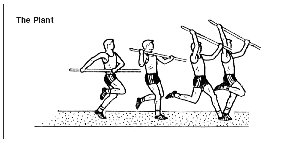
Rear hand at the hip. Raise toward the shoulder. Reach forward and overhead. Plant with the drive knee up.
Play or scrub the rig to compare the transitions with your reference. The rear/right grip is reversed to release the forearm twist. After takeoff, the legs swing forward, the body rolls back, and both feet extend above the head. Both hands stay attached to the loaded pole. The shoulder now deforms directly from the original mesh.
Drag to orbit · scroll to zoom · P pauses
1 / 217
Loading skinned animation…
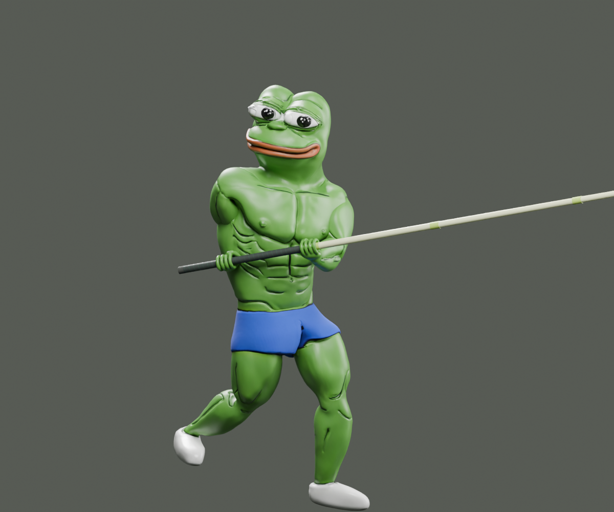
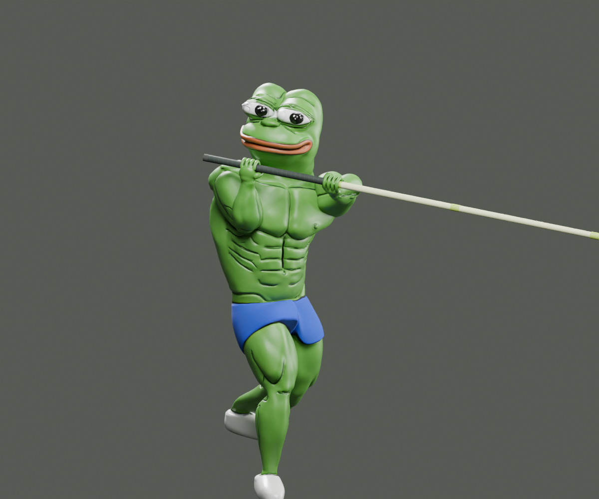
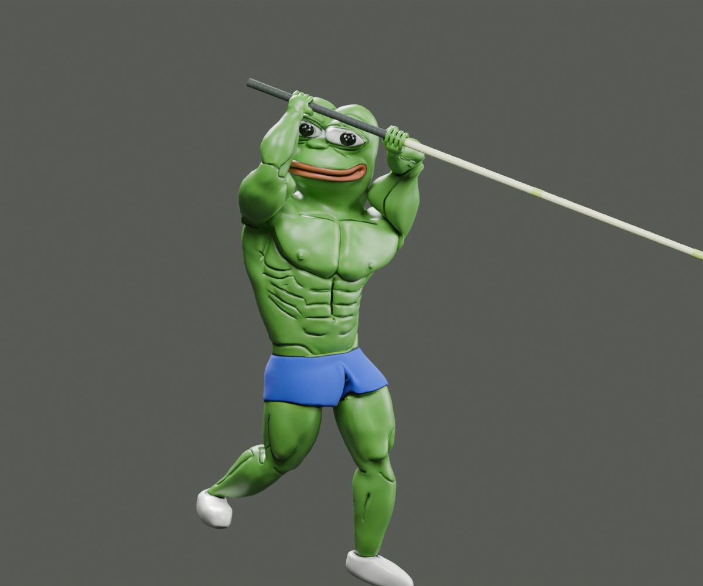
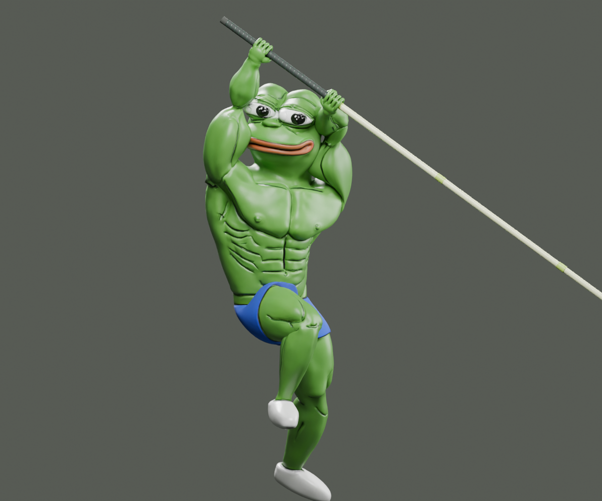
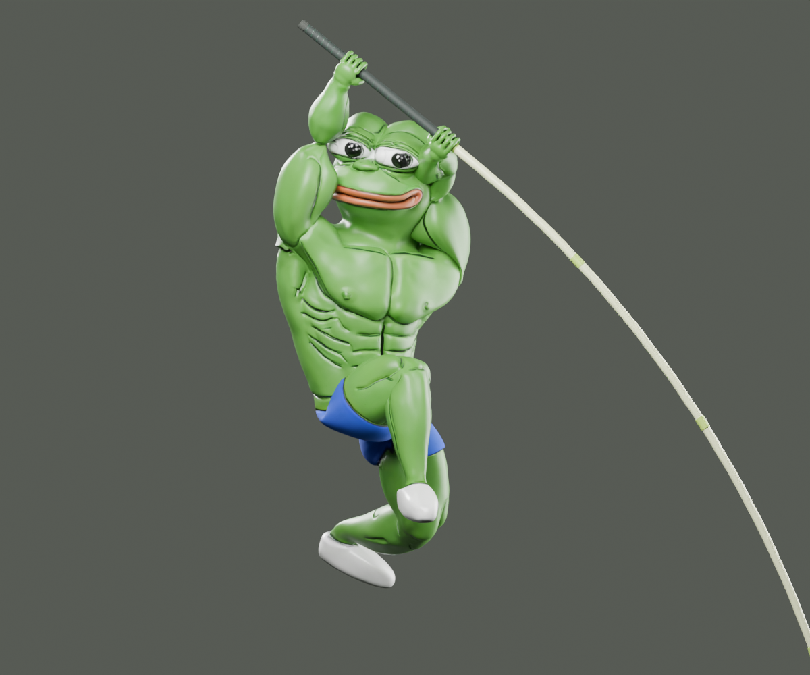
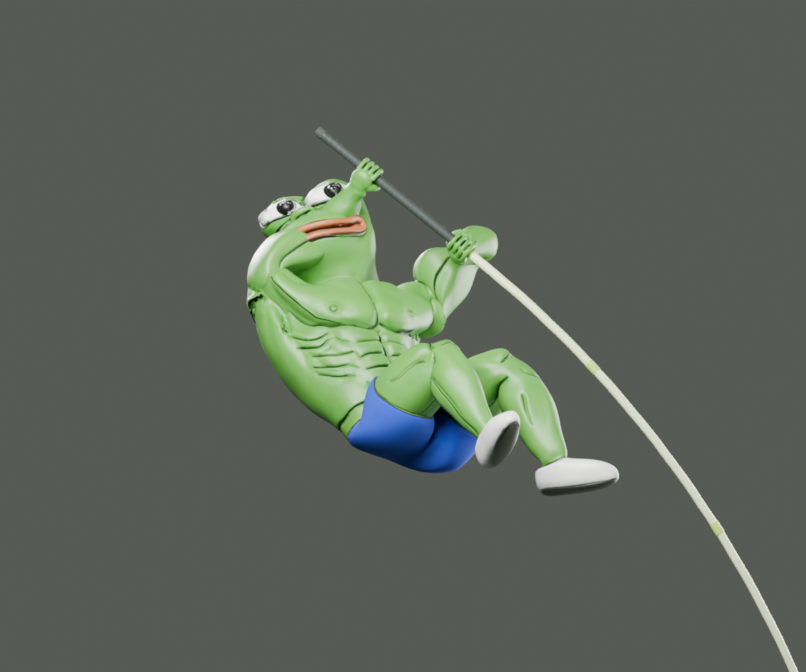
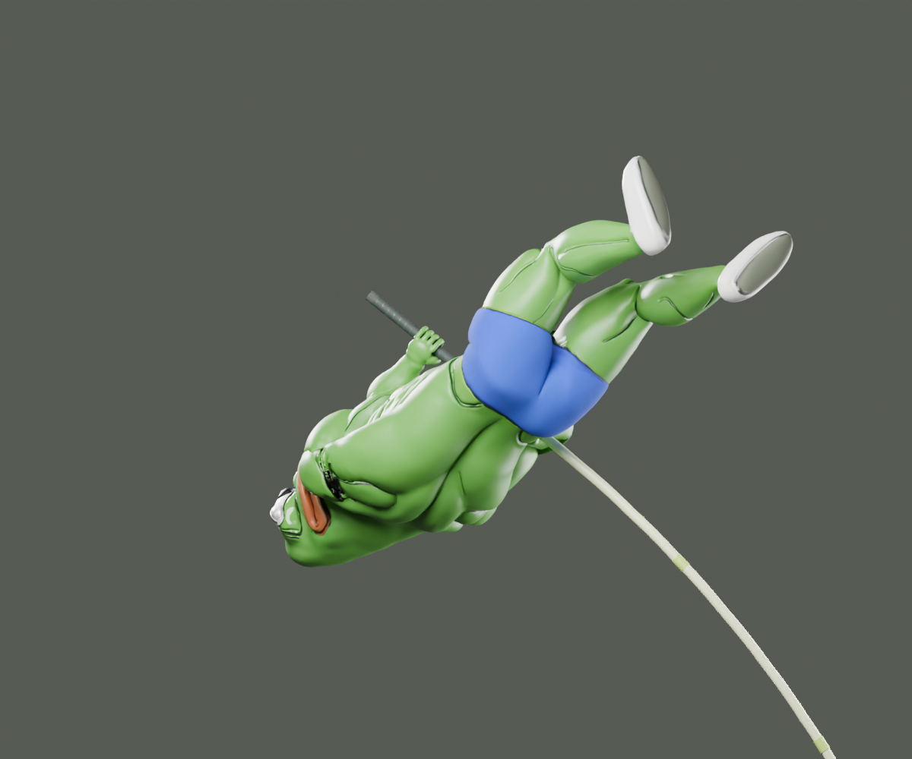
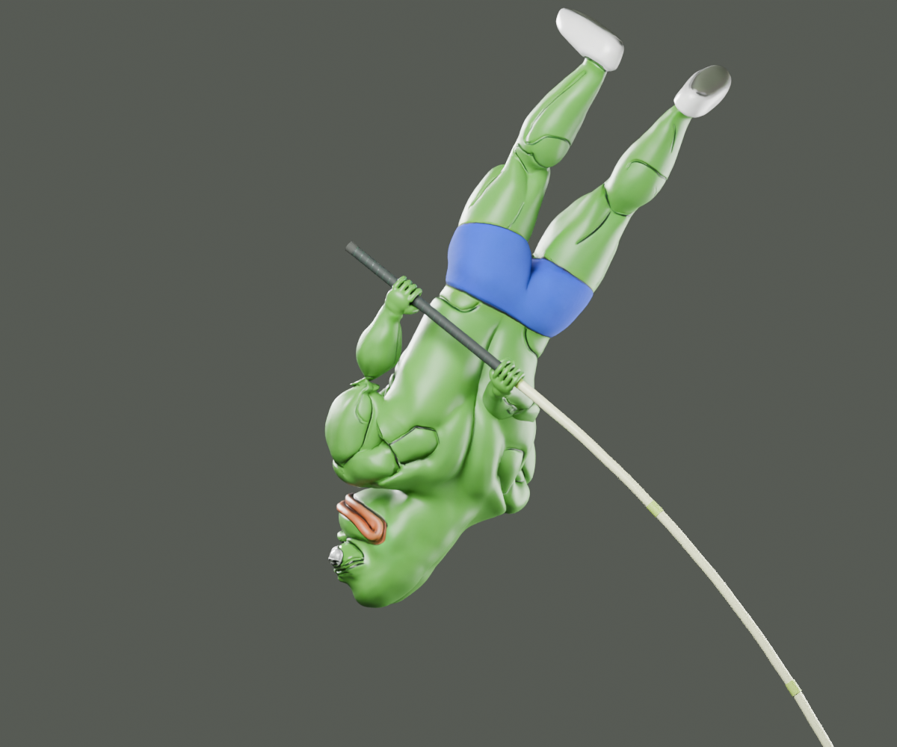
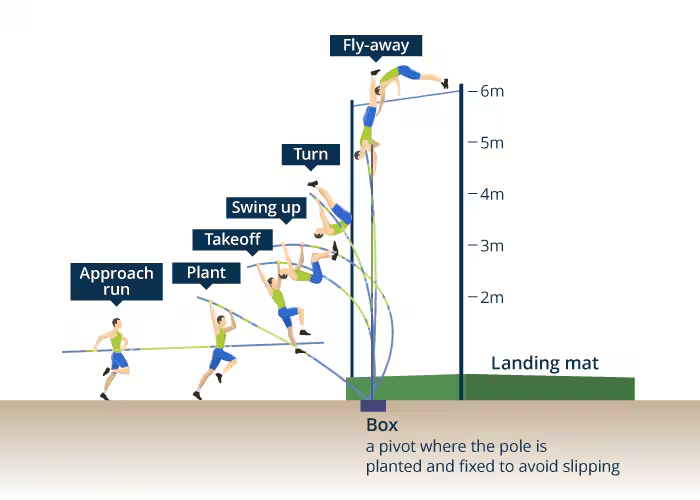
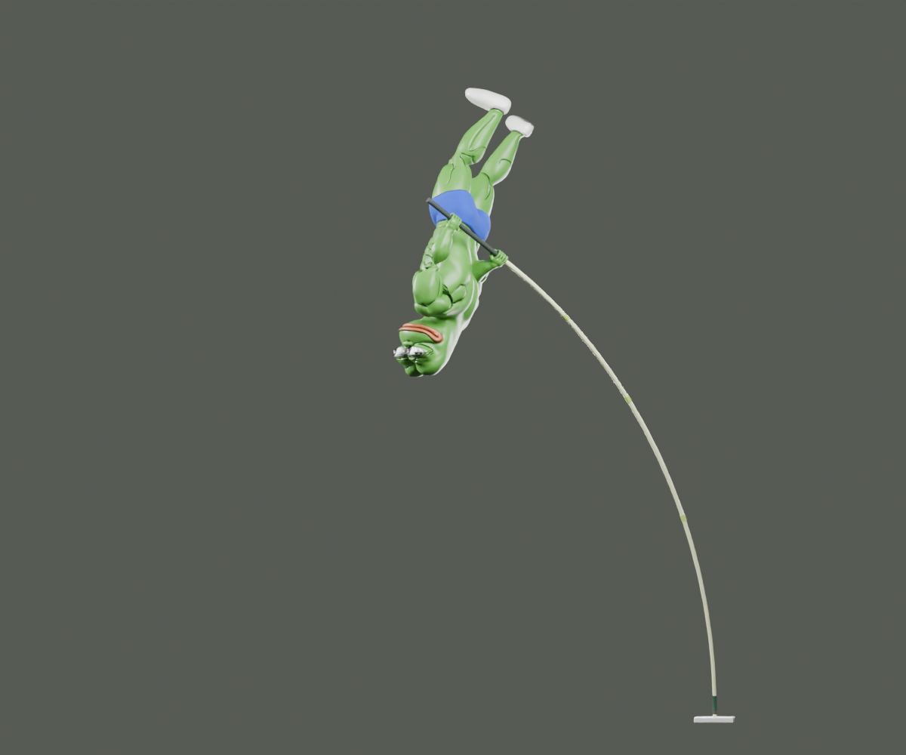